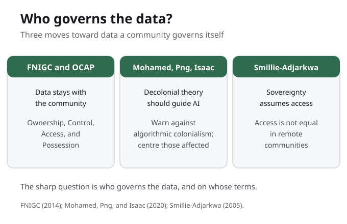

Part III opens: from naming the problem to answering it
For seven weeks we learned to see the New Jim Code and name its anatomy. This week the course turns from naming the problem to answering it, and it begins, on purpose, not with a Western fix but with a different relation to data altogether. Instead of asking only how a system is biased, we ask who should govern the data, and on whose terms. That second question is harder to dodge.
This is the hinge of the term. For seven weeks you asked whether a system was biased; now you ask who should govern it at all. Those are not the same question, and the second one is far harder to avoid.
Most systems assume whoever collects data owns it. What changes if the community owns it instead?

The pivot: from data subject to data steward
Here is the pivot. Most systems assume that whoever collects the data owns it, so the community is the subject of the data, not its steward. Indigenous data sovereignty begins from the opposite principle: that First Nations, Inuit, and Metis peoples have the right to govern the data about their own communities. It reframes data from something extracted by outsiders to something a community holds and governs.
Watch the quiet assumption buried in whoever collects the data owns it, because it turns living communities into raw material. Sovereignty rejects the idea that the moment data leaves you, you stop being a person and become a resource someone else mines.

OCAP: Ownership, Control, Access, Possession
OCAP names four First Nations principles for data governance, stewarded by the First Nations Information Governance Centre. Ownership means the community collectively owns its information. Control means it controls how data about it is collected and used. Access means the community can reach data about itself. Possession means it physically holds and stewards that data. OCAP is a registered trademark of the First Nations Information Governance Centre and belongs to First Nations, so we study it with respect, not as a generic toolkit.
OCAP names four principles, not one. Ownership, Control, Access, and Possession each protect a different thing, and they are held together as a set rather than offered as a menu.
Why all four principles are needed together
The four principles only work as a set. Ownership without possession can be hollow, because someone else still physically holds the files. Access without control means you can see the data but cannot decide how it is used. A system can grant one principle and withhold the rest, which looks generous on paper while keeping all the real power exactly where it was. Together, the four make data governance real, not symbolic.
Resist treating the four like a menu. A system can grant one and withhold the rest, which looks generous on paper while keeping the real power where it was. The set, held together, is what makes governance more than a gesture.
What do Ownership, Control, Access, and Possession each protect, and why are all four needed?
The test of a real data right
Here is the test of whether a promise of data rights is genuine: ask what someone can actually withhold, refuse, or undo. Rights you can see but never exercise are decoration, and decoration is what unjust systems offer instead of change. Possession is the principle that turns a right on paper into a right a community can use, because it asks who physically holds and stewards the data.
Ask what a community can actually withhold, refuse, or undo. Rights you can see but never exercise are decoration, and decoration is what unjust systems offer instead of real change.

Who governs the data?
Put the week together around one question: who governs the data about a community? The First Nations Information Governance Centre answers with OCAP, four principles that keep ownership, control, access, and possession with the community. Mohamed, Png, and Isaac answer for artificial intelligence, warning against tools built elsewhere and imposed on communities. Smillie-Adjarkwa reminds us that governing data assumes you can reach it, and access is not equal. Read together, they move the question from whether a system is biased to who holds the authority.
The sharp question this week is not only whether a system is biased, it is who governs the data and on whose terms. Sovereignty asks the system, not the community, to justify who holds authority.
For a community you know, who governs the data collected about it now, and what would change if the community governed it under principles like OCAP?
Decolonial AI and algorithmic colonialism
Mohamed, Png, and Isaac argue that decolonial and postcolonial theory should guide how artificial intelligence is built and governed. They warn against algorithmic colonialism, where tools built elsewhere are imposed on communities and the power and benefit flow back outward to the people who built them. A decolonial approach instead centres those most affected in how systems are designed and governed.
Pair this with what you already learned. A biased algorithm is the New Jim Code working badly, but algorithmic colonialism is it working exactly as designed, with the benefit flowing back to the people who built it.
Sovereignty assumes access, and access is not equal
Sovereignty assumes access, and access is not equal. Smillie-Adjarkwa documents how Indigenous women in remote communities face limited internet access, including to health resources. Governing your data also means having the infrastructure to reach it, so the digital divide is not a separate issue but part of this one. You cannot govern data you cannot even reach.
You cannot govern data you cannot even reach. Sovereignty without infrastructure is a right on paper, which is why the digital divide is not a separate issue but part of this one.
A portable lens: four questions for any data system
So when you meet a data system this week, ask four questions. Who collects this data, and who owns it now? Who can access it, and who controls how it is used? Who physically possesses it? And what would change if the community it describes governed it under principles like OCAP? These questions shift the burden: instead of asking a community to prove it was harmed, you ask the system to justify why it, and not the community, holds the pen.
These four questions are your portable tool for the week, and notice how they shift the burden. Instead of asking a community to prove it was harmed, you ask the system to justify why it, and not the community, holds the pen.
In a system you use, where could a community govern its own data, and what is stopping that now?
Studying an Indigenous framework with care
The care instruction is itself part of the lesson. Representing an Indigenous framework loosely, or as a generic toolkit, would repeat the very extraction OCAP exists to refuse. So handling it with accuracy is the assignment, not a footnote. OCAP is a registered trademark of the First Nations Information Governance Centre, and the CARE Principles for Indigenous data are stewarded by the Global Indigenous Data Alliance. For the primary statements, we go to those communities' own words, not a course slide.
Representing an Indigenous framework loosely would repeat the very extraction OCAP exists to refuse, so handling it with accuracy is the assignment, not a footnote. Point to the First Nations Information Governance Centre and the Global Indigenous Data Alliance for the real statements.
What You Are Learning This Week
Sovereignty Reframes The Question
Indigenous data sovereignty is the right of First Nations, Inuit, and Metis peoples to govern the collection, ownership, and use of data about themselves. It moves the community from the subject of the data to its steward, reversing the default assumption that whoever collects data owns it.
OCAP Works As A Set Of Four
Ownership, Control, Access, and Possession each protect something distinct, and all four are needed together. Ownership without possession is hollow and access without control is thin. OCAP is a registered trademark stewarded by the First Nations Information Governance Centre and belongs to First Nations, so it is studied with respect, not as a generic toolkit.
Decolonial AI Centres Those Most Affected
Mohamed, Png, and Isaac (2020) argue that decolonial and postcolonial theory should guide how AI is built. They warn against algorithmic colonialism, where tools made elsewhere are imposed on communities, and call for centring those most affected in how systems are designed and governed.
Sovereignty Assumes Access
Governing your data assumes you can reach it, and access is not equal. Smillie-Adjarkwa documents how Indigenous women in remote communities face limited internet access, including to health resources. Governance only works where a community can actually reach its data, so the digital divide is part of this question, not separate from it.